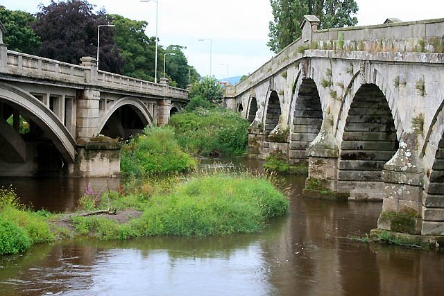

序
私がこれから読者に提示しようとしている年代記は意識的に想像力を働かせた結果ではない。題名が示す通りこの十年間の夢の記録である。折々見た夢を日記から掘り起こして、ほぼ時間的な順序に沿って書き写したものだ。夢から覚めた後できるだけ速やかに筆記したため、必然的に文体が未整理であり用語の洗練を欠いているものの、少なくとも生々しい色彩を得てはいる。それぞれのヴィジョンが私の心の中に強い痕跡を残している間に、眠りの中で見聞きした光景や音響の現実感が去ってしまう前に、紙面に記されたものなのだから。
これらの夢体験が類例のないものかは不明だ。これまでのところ、夢見る能力を私ほどの強さないし異常さで発展させた人物には会ったことがない。たいていの夢は、それが常になく鮮明かつ明晰であっても、行動の統一性や、細部および
自分の能力を説明する理論について、読者に提示できるようなものは持ち合わせていない――少なくとも生理学的な側面が関係する限り。無論、医学教育を受けた身としてこの現象に関する
それぞれの夢をいかに解釈し利用するかについては、言わぬが花であろう。多くの夢は明白に寓意的であり、曖昧な部分があるにせよ例外なく調和がとれ、ギリシャおよび東洋の神話の方法論を知る者にとってはかなり歴然たる意味を持っている。それゆえ、ここで自分なりの説明を敢えて加うるの愚を犯す必要はなく、私の前を過っていったままの姿で、目覚めた時心に残ったままの印象の通りに夢を記録するにとどめるべきだ。
不幸なことに、覚醒後の記憶が不正確だったり不完全だったりしたため割愛した夢もある。ヴィジョンの中で目や耳にした書き文字や議論の幾つかが脳に断片的な印象しか残さず、目覚めた後で失われた走句を思い出すのに難渋することになるのだ。
こういった不完全な夢体験は、しかしながら、多くはなかった。逆に、通常の意識のもとで、眠っている間に出会った絵を想起し見聞きした言葉をいともたやすく再現できることに私はいつも驚いている。
数ヶ月の間この種の特殊なヴィジョンが訪れないことも何度かあった。この合間の期間に見た夢は普通の、支離滅裂でどうでもよいものだけだった。かなり長期間にわたって夢体験の観察を続けた結果、前述の能力を発揮するために必要な大脳の状態に至るには、気候、標高、電気の条件が影響を与えると言っても問題はなかろう。乾いた空気、高い標高、キリッとした静かで爽快な空気がこの活動を促進する。一方、高湿、川ぞい、曇天、暗鬱な天候によって無期限に抑制されてしまう。従って、これらの夢、特にその中でも特に鮮明で詳細で幸福な夢の多くを見たのが大陸においてだったというのは、驚くべきことではない。セヴァーン川(*1)の土手にある我が家の周辺は低い湿地が広がり、そこではほとんどかような夢の顕現を得ず、時には、自宅に長期間滞在した後、夢の贈り物を二度と受け取れなくなったのではないかと思ったものだった。ところがパリやスイスを訪れると必ず、瞬く間にそれは戻ってくる。必要な磁気ないし心霊的な緊張があればそれは確実に自己を主張し始め、何週間も経たないうちに再び日記は夜毎のヴィジョンの記録に満たされるのだ。
こういった夢幻の中には、小説の骨格どころか細部に至るまで備わったものがあり、私は折に触れてそれらを各種雑誌に寄稿してきた。『ロンドン』誌に掲載されたある怪談(*)は、怪奇性とショッキングな性格によってたいそう評判になったが、その源はこれである。昨年の『年刊クリスマス』誌に掲載されたおとぎ話(**)もまた同様だ。これは先般ドイツ語に翻訳され、外国の定期刊行物の編集者の手で再録された。私は文芸に対してよりシリアスな貢献もしてきたが、それらもまた同源であり、夢の中で英語やそれ以外の言語による詩の断片を見聞きしたのは一度や二度のことではない。極めて遺憾なことに、一編たりとも全体を思い出すに至っていない。心に残る印象ががいかに明瞭で手近な感じがしても、いつだって全てを書き終える前に記憶の手からこぼれ落ちてしまうのだ(***)。しかしながら、韻文に限ってすら私の夢体験はコールリッジのそれを質量ともに上回る。この方面における彼の能力は詩的断片たる「忽必烈汗」をものするに止まり、その際も情景を夢見たのではなく詩句を得たのみであった。私は諦めてはいない。将来、現在以上の好ましい条件下において、途切れた糸が再び繋がって、夢の詩の数章が完成される日が来るのを。
おそらく、この書物に収められた夢の大多数は明け方に見たものだという点に触れるのも有益だろう。中には日の出後の「二度寝」の際に見たものもある。どうやら何よりも空腹であることが、おおかた何らかの微妙な磁気ないし他の大気の状態と相俟って、この種の感覚への扉を開くらしい。またこれと関連して、私がこの十五年間肉類を避けてきた点を加えてもよかろう。この間じゅうバター、チーズ、ミルクといった動物由来の食物を摂取していたため「ベジタリアン」というわけではなかったが。空腹であること及び飲酒しないことが睡眠中の脳髄が発揮する洞察力に影響する件は、現在よりもはるかに夢を尊重していた古代にも知られていた。これは神的秘術及び神秘学の記録に残る様々な記載から明らかである。後者の例として、ピロストラトスは「テュアナのアポロニウス伝」の中でフラオルテス王(*2)に対しこう語っている。曰く、「夢占い師ないしヴィジョンの解釈者は、夢の解釈を始めるにあたって、まずそれをいつ見たかを問いただすものである。なんとなれば、早朝に見た夢ならば上手に解釈することができる（すなわち、その夢は解釈に足る価値を持つ）だろう、それは魂が解放され予言に向いた状態になっているからだ。だが寝入りしなないし真夜中頃には魂は尚も曇った酩酊状態にあるので、かかる場合、賢い夢占は解釈を拒むものである。そればかりか神々御自らこの意見に賛同され、お告げを下されるのは節制した魂に限られる。僧侶は先立って一日の断食と三日の禁酒をしたるが故、神託を受けるにふさわしき明晰な魂となり得るのだ。」またイアンブリコス、アガトクレスに書きて曰く：――「聖なる眠りについて語られたる事ども及び夢によって得られたる事どもに無益なるものなし。吾人はこう見る：――魂には二重の生あり。低きものと高きものなり。眠りの間、魂は肉体の呪縛を解かれ、自由闊達なる存在としてその知性ある神的な生に至る。対象の真なる姿を――知性の世界の対象なり――見る新しい能力が内より興り目覚めるのであるから、この解放状態にあって、それ自体にあらゆる事象の原理を内在する魂が然様な先行原理の構成せる未来に瞠目すべしとて、誰か驚くものあらんや？ 精神の中でより高貴なる部分はより高次の性質を吸収したりて、かくの如く統一し、神々の知恵と予言とを受け取る主体となりたり‥‥肉体の夜は魂にとっては日中に他ならぬ。」
しかし私はこれ以上引用を重ねようとは思わないし、このささやかな作品に不釣り合いな仮説を持ち出して読者を悩ますつもりもない。だから、ここまで私の夢体験について自分で知る範囲の事実と状況を述べたところで、これ以上の注釈なしに我が夢絵巻を紐解き、夢そのものに語らせていくことにしよう。
――Ａ．Ｂ．Ｋ．
原注
・この序が書かれたのは一八八六年のことで、本書に記された夢体験のいくつかはそれ以降のものである。本書の刊行は著者の遺志による。（編）
(*) "Steepside"（「崖端館」（http://www.asahi-net.or.jp/~YZ8H-TD/misc/AnnaKingsford/SteepsideJ.html））（編）
(**) "Beyond the Sunset"（「夕映えのむこうの国」（http://www.aozora.gr.jp/cards/001882/card57998.html）（編）
(***) 『完全なる道（The Perfect Way; or, the Finding of Christ）』の補遺の一つをなす「魂の霊的交流に関する講義、ないしは被造物間の愛の用途、ウェヌスの金の書の一部として」(*3)と題された詩はこの規則の例外となろうが、詩の全体を想起する前に夢を繰り返す必要はあった。（編）
訳注
(*1) イギリス一の大河
(*2) King Phraotes、Phraortes の誤植として訳しました。
(*3) 『完全なる道』は Anna Kingsford Site（http://www.humanitarismo.com.br/annakingsford/english/Works_by_Anna_Kingsford_and_Maitland/Texts/01-OAKM-P-Pwaytxt.htm）の他、カナダ神智学協会のサイト（http://www.theosophical.ca/books/PerfectWay_ABKingsfordEMaitland.pd）で読めます。
一 極刑列車
昨夜見た夢がとても異様で鮮やかだったため、それをどうしてもあなたに伝えたくなりました。思い出す度にぶり返してくる印象から自分の心を解放したいというだけではなく、夢の意味を見出してもらえるように。今でも尚、自分でそれを見つけようとすると、余りに恐ろしすぎ身震いしてしまってできません。どうやらあなたと私は男女からなる大群衆の中にいるようでした。私自身を除いて――私は自分の意思でそこにいたからですが――全ての人々の上に死の判決が広がっていました。新たに君臨した恐怖の王の役人がいかなる凶運を宣言したかを――どうやってか判りませんが――私は知っていました。私はまたよく知っていたのですが、群衆の誰一人として本当に死刑に値する罪を犯した者はおらず、何か政治や社会や宗教についての体制と繋がりがあることを口実に完全な破滅を運命づけられたのです。皆、もうじき大規模なスケールで死刑が執行されることを知るようになり、だが刑場も処刑法も何一つ知らされないままでした。ここまでの所、夢の中には次に飛び出してきた恐怖のシーンを暗示するものは現れなかったのです――視覚、聴覚、触覚の全感覚を最大限に緊張させるシーンで、そんな夢はこれまでに見たことがありませんでした。
星の見えない暗い夜でした。私は、凶運に見舞われた全ての男女、どこでどう殺されるか知らぬままもうじき自分たちが死ぬことになると承知している男女と共に、どこか未知の目的地へと漆黒の闇を疾走する列車の中にいました。私は列車の後端にかなり近い車両の片隅に座り、開いた窓から身を乗り出して闇の中を凝視していました。その時突然声がしたのです。空から私に向かって話しかけたような低く明瞭で激しい声音は、今でも思い出すだけでぞっとします――「処刑は今まさになされんとす。お前の全ては失われるのだ。列車の前には恐るべき崖が悍ましい高さに切り立ち、底は測鉛の届かぬ海底よりも深い。線路の先には他にない。列車はその深淵に向け飛び込み消滅する。機関車には誰も乗っておらぬ！」
これを聞いて私は恐怖に飛び上がり、同じ客車に乗っている客の顔を見回しました。先の怖るべき言葉を発した者も、それを耳にした人もいませんでした。客車のドームのランプがちらちらと周りの客を照らしていました。一人一人顔を見ましたが、警告があった様子など影も形もなかったのです。そこに再び虚空から声がしました――「助かる道はただ一つ。列車から飛び降りよ！」
私は一目散に客車のドアを押し開け、ステップに足を掛けました。列車は猛進し、速度が上がるにつれ激しく前後に揺れ、巻き起す強風が私の髪を顔に散らし服の上で切り裂きました。
この瞬間まで私はあなたのことを考えていませんでした。あなたが同乗していることにも気づいていなかったようです。客車のドアの脇の枠を固く握りながら、じりじりと機関車に向けて進んでいきました。どこかで線路の上に安全に飛び降りられる場所を見つけられないかと望みつつ。こうやって客車から客車へと渡りながら、それぞれの客車のランプに照らされた顔を見たのですが、乗客の中に迫り来る運命のことを考えている人はいませんでした。あるコンパートメントを覗いた時、ついにあなたに会えたのです。「出て！」私は叫びました「出て！ 逃げるの！ もうすぐ私たちは粉々よ！」
あなたは即座に立ち上がるとドアをこじ開け、外のステップの上で私の横に立ちました。速力の出ていることといったら、これまでにない恐怖を覚える程でした。列車は暴走しながら前後左右に揺れました。風は叫び声を立てて流れていきました。「飛び降りて！」あなたに向かって叫びました「逃げなきゃ！ ここにいたら間違いなく死ぬわ。この先には深淵があって、機関車には誰もいないんだから！」
こう言うとあなたは振り向き、とても深刻な目で私を見て言いました。「いえ、飛び降りない。二人で列車を止める。」
この言葉を残してあなたは私から離れ、ステップに沿ってじりじりと列車の前の方に進んでいきました。まったくこんなドン・キホーテみたいな真似をして、と腹立ち半分心配半分で私も後を追いました。客車の一両には母と一番上の兄がいましたが、他の人と同様に何も気づいていませんでした。やがて先頭の客車にたどり着いた私たちは、機関車の釜が発する恐ろしい光の中でかの声は正しく、機関車には乗務員がいないことを見てとったのです。
あなたは進み続けました。私は「無理！ 無理！」と叫びました。「できないわ！ お願いだから戻ってきて。」
そこであなたはステップに膝を落とし、言いました――「確かに。このやり方じゃ無理。でも列車を救うことはできる。連結器を切り離すから手伝って。」
機関車と客車は大きな鉄のフック二つと止め釘で連結されていました。必死になって、私などほとんど落ちそうになりながら、フックを外し客車を機関車から切り離したのです。すると機関車は気のふれた超自然の怪物のように一人ですっ飛んでいき、背後に巨大な火花の帯を曳きながら闇の中に消えました。私たち二人はステップの上に立ったまま、ゆるやかに速力が落ちていくのを言葉もなく見ていました。ついに列車が停止すると、乗客たちに「助かったんです！ 助かったんです！」と大声で話しかけました。ドアが開いてどやどやと乗客が降り、しきりに話を交わそうとする、そんな混乱の中で私の夢は覚め、しかしその恐怖に打ちのめされ動悸が止まらなかったのです。
――ロンドンにて、一八七六年十一月。
原注
・ここで話しかけている相手は作中言及される友人である。この夢を見たのは一八七六年の暮れで、従って露土戦争前夜のことだった。我々二人にとって、この戦争は道徳及び心霊的な性格における国家の危機と関係しており、今後の生活や仕事のすべてを支配することになるだろうと思われて、我々はこれに深い関心を持っていた。（著者）
二 素敵な眼鏡
私は一人海岸を歩いていました。こよなく晴れた明るい日でした。内陸には見たことのないほど美しい風景が広がっていました。彼方には大きな丘が連なり、その最も高い峰々の頂上には雪が白く輝いていました。砂浜に沿って歩くと郵便配達夫の装いをした男がやってきたのです。男は私に一通の手紙を渡しました、あなたからの手紙を。そこには：――
「私は現存する中で最も古くまた貴重な書物を入手しました。世界が始まる前に書かれた本です。本文は読みやすいのですが、膨大な注釈が、なんとも細かく目立たない文字で書いてあるので判読できません。いつもスヴェーデンボーリが掛けていた眼鏡を私のために入手してください。小型の方――彼がハンス・クリスチャン・アンデルセンに贈ったもの――ではなく、大型の方で、多分置き忘れられています。それはスピノザ作だと思います。スピノザの仕事は光学ガラスの製造でしたよね、しかも知られる中で最高の。手に入れられますか？」
読み終えて目を上げると、郵便配達夫が急ぎ足で砂浜を立ち去るのが見え、私は叫びました「待って！ どうやって返事を出せばいいのよ？ 待ってくれないの？」
配達夫は立ち止まって辺りを見回しすと、こちらに戻ってきました。
「返信ならここにもうありますよ。」と彼は言い、郵便鞄を手で叩いて、「早速配達いたします。」
「私が書いていないのにどうして返事があるの？」私は聞きました。「何か勘違いしていますよ。」
「いえ、」彼は言いました。「私が参りました街では、返信はすべて局の方で書きまして、手紙本体と同時に配達いたします。貴女のお返事も鞄に入っています。」
「見せて」と私。配達夫はもう一通の手紙を財布から取り出して私に寄越しました。開いて読むと、私自身の筆跡で、あなたに宛てて、こんな返事が書いてありました：――
「ご所望の眼鏡はロンドンで買えます。しかしそのままでは掛けられません。何年も使われたことのない眼鏡なので、念入りな清掃が必要です。ロンドンは暗すぎてよく見えないため、あなた自身がそこで清掃することはできません。あなたの指もその作業をするには細さが足りません。眼鏡を私のところに持っていらっしゃい。私が代わりに作業します。」
私は手紙を配達夫に返しました。配達夫は微笑んで頷きました。その時、驚いたことには、彼が駱駝の毛のチュニックを腰に巻いているのに気づいたのです。配達夫に声を掛けようとした時点では――どうした訳か――彼のことをヘルメスだと思っていました。しかし今度はその人は洗礼者ヨハネに違いないと思い、かくも偉大な聖人と言葉を交わしたことにびっくりして目が覚めました！
――ロンドンにて、一八七七年一月三十一日。
原注
・「極刑列車」の注で述べた人物に宛てた他の手紙より。（著者）
・夢見人はこの時点ではスピノザのことを全く知らず、レンズ製作者だったことを意識してもいなかった。後に経験したことからみて、問題の眼鏡が示そうとしているものは彼女自身の直観あるいは解釈による把握力の高さであることは明白である。（編）
三 完全性委員会
夢の中で私は大きな部屋にいた。そこには七名の人物がおり、みな男性で、一つの長テーブルについていた。各人の前にはそれぞれ一巻の巻物が置かれ、中には書物を置いている人もいた。一人を除いてみな白髪で、高齢のため背中が曲がっていた。例外というのは二十歳ほどの男で、髭を綺麗に剃っていた。老人の一人が前に置いた書物のページを開き、ある箇所を指差してこう言った：
「これは我らが教団員の魂がこの本の中に書いたものだ――『故に汝ら完璧たれ、天にまします汝らが父の完璧なる如く。』ここに『完璧なること』という言辞をいかに解すべきだろうか？」別の老人が目を上げて答えた。「それは智慧を意味するに違いない。智慧は十全なることの総和だからだ。」そこで別の老人が言った。「あり得ぬことだ。御神のように賢い被造物は存在し得ぬからだ。我々の中で左様な境地に達し得る者がどこにおるかね？ 部分は理解しえても全体を把握することはできぬぞ。御神が賢くある如くに被造物が賢くなろうとするのは馬鹿げておる。」
すると四人目の老人が言った：――「真理を表そうとしたのに決まっている。真理こそが唯一の完成品だからだ。」ところが最後の発言者の隣席の者が答えた。「真理もまた部分的なものに過ぎない。我々の中で御神のように見られる者がどこにいる？」
次に六人目が言った。「疑いなく正義のことだ。公正性の総てをまとめるとこれになるからだ。」最初に口を開いた老人がこれに答えた：「そうではない。正義は復讐を含意しているが、復讐するは神にありと書いてあるからだ。」
その時、若い男が立ち上がり、手に開いた本を載せこう言った：――「他にも同じ言葉を聞いた方がいて、ここにその方が残した別の記録があります。私たちの求める知識を得るためにその方の表現が役立つかを調べてみましょう。」その箇所を見つけた男は大声で読み上げた：――
「汝ら慈悲深くあれ、まさに汝らの父が慈悲深き如くに。」
全員が本を閉じ、私の顔をまじまじと見つめた。
――ロンドンにて、一八七七年四月九日。
四 血染めの市
夢の中で私は長く狭苦しい街路を彷徨っていた。両脇にはのっぽの家々が切れ目なく続き、壁とドアが獄舎を思わせた。空気は重く澱み、日暮れ時らしかった。左右の軒の間から垣間見える細長い空の中では、太陽も月も星も見分けがつかず、いかなる色彩も見出せなかった。どこもかしこも灰色で、見通しが悪く、暗かった。足元を見ると、街路の石畳の隙間から雑草が生え出していた。生き物は影もなく：この地はすっかり荒れ果てているようだった。私は一人ぼっちで音のない侘しい土地のただ中にいた。音のない？ 違う！ 耳を澄ませば、初めは鈍くかすかに、押し殺された嘆きのような低い音が這い寄ってきた。その音は止まることがなく、この土地にとって余りに自然なものだったためすぐには気付かなかっただけなのだ。だが今、私にはその音が明瞭に聞こえるし、肉体をこれでもかと痛めつけられている苦しみの声だということも判っていた。そういった音をとりわけはっきり発している一軒に目を据えていると、ドアの下からじわじわと血が流れ出し、街路に滴り落ちて、あちこちの茂った草に赤い染みを作るのが見えた。まるで私に向かってのたくり流れてくるかのようだった。上の方に目をやると、ぴったりと閉じられた格子窓のガラスにも、同じ恐怖の色素が点々と飛び散っている。
私は「今ここで人殺しが！」と叫んでドアに駆けつけた。その時初めて、ドアの外側には鍵穴も取手もなく、内側からしか開けられないことに気づいた。姿こそ確かにドアだったが、他の面では堅固で通行不能な壁そのものだ。ベルやノッカーを探したが見つけられなかったし、家の中に入るための手段もなかった。見えるものといえばドアの上の梁に掲示が釘で打ち付けてあるだけで、そこに書いてあったのは：――「生体解剖学者の実験室。」読むうちに呻き声は尚一層大きくなり、もがくような音も聞こえてきた。また新たな犠牲者が加わったかのように。私は両手で激しくドアを叩き助けを呼んだが無駄だった。戸口に流れる血でドレスが朱に染まった。それを見て怖くなった私は踵を返して逃げた。街路を通り抜けていくと、周りから聞こえてくる音はどんどん強まり、その中から一つ一つの叫びが、気違いじみた嗚咽の爆発が聞き分けられた。どの家のドアの上にも先に見たような掲示があった。ある家のはこうだった：――「妻殺しの夫」、こんなのもあった：――「子供を死ぬまで殴る母」、三つ目は：――「屠殺場。」
どのドアも通れなかった。どの窓にも格子が嵌っていた。外からなんとかしてあげたいという思いも虚しく。徒らに私は声を張り上げ助けを求めた。街路は墓場のように荒涼として、辺りで動くものといえば音もなく流れる血だけで、これら恐怖の住居のドアの下から浸み出してくるのだ。恐怖に駆られた私は出口を求めて狂ったように街を走り、叫びと嘆きの声が後を追った。突如として目の届かないほど高い壁が現れ、それが行き止まりだった。本当に果てしなく高い壁に見えた。そこには大きな黒文字でこう記されていた――「出口はない。」
絶望と苦悩に胸がふさがり、私は呆然と石畳に頽れた。大声で繰り返した。「出口はない。」
――ヒントンにて、一八七七年一月。
五 鳥と猫
夢の中で私は美しい鳥を飼っていた。テーブルの上に鳥籠を置いたのだが、その部屋には猫がいた。私は鳥を籠からテーブルの上に出した。すかさず猫が飛びつき鳥を咥えてしまった。私は猫を抑えこんで獲物を取り上げようとし、叱りつけ、私の美しい鳥の運命を嘆いた。突然誰かが話しかけてきた。「この不幸な事態に対し、責任があるのはお前自身だけだ。籠の中にいる間、鳥は安全だった。なぜお前はそれを出して猫の目の前に置いたりしたのだ？」
原注
・これ及び次の夢は、従来他の取り決めと共に遵守されてきた秘密保持に関する規則を緩和し、外部、すなわちパリ大学の大家あてに提出しようという方針――この夢によってたちどころに中止となった――が決定されようとするまさにその瞬間に見られたものである。この夢は聞く者によって警告とも予言ともとれるのだが、一つの夢が二重の側面を持つ例は今回のみではなかった。（編）
六 明るい家の中の宝
次に見た夢では、森の中に一軒の家が立っていた。夜のことで、家中の部屋という部屋にランプが明るく灯っていた。だが、おかしなことに窓には鎧戸がなく、しかも地面まで伸びていたのだ。一人の老人が部屋の一つに座り、テーブルの上のお金と宝石を数えていた。しばらくすると、心霊となって老人の隣に立つ私の耳に、足音とひそひそと相談する男たちの声が入ってきた。見ると灯りのついた部屋を覗き込む一つの顔があった。気がつけば外の暗闇には人だかりができており、老人とその宝物をじろじろ覗いているのだ。老人もこの物音を耳にし、はっとして腰を上げると金貨と宝石をかき集めて隠そうとした。
「何者ですかあれは？」私は老人に聞いた。恐怖に青ざめた老人はこう答えた「あれは盗賊と殺し屋です。この森は奴らの根城でしてな。儂を殺して宝を奪おうとしているのです。」私は言った「だったら、なぜあなたはこんな森の真ん中に家を建てたのですか？ 窓に鎧戸もつけないで。誰でも外から灯りのついた部屋の中を見られます。それがわからない程あなたは頭がおかしいか、さもなきゃ馬鹿なの？」老人は間の抜けた諦め顔で私を見た。「鎧戸のことは思いつきませんでした。」と言って。
立ち話をしているうちに、窓外に蝟集する泥棒は大変な数になり、老人は宝石袋をつかんで別の部屋に逃げ込んだ。だが、その部屋の中も煌々と照らされ、窓には鎧戸がなかった。泥棒は部屋から部屋へと容易く跡を辿って、家じゅう追いかけ回した。隠れる場所はどこにもなかった。鏨と槌と鋸の音が聞こえだし、殺し屋がなだれ込んだのがわかった。遠からずここの主人は愚かな行為によって自ら招いた死に直面することとなろう。そして彼の宝物は盗賊の手に落ちるのだ。
――パリにて、一八七七年八月三日。
七 森の大伽藍
気がつくと私は――東洋風の顔つきをした若い男に案内されて――延々と木々が連なる風景の中を歩いていた。歩むにつれ周囲の木々の様相は絶え間なく変わっていった。欧州楢と楡の茂みから、より温暖で湿潤な気候へと。頭上から棕櫚の広葉や、途方もない数の名前も知らぬ木々の葉が垂れ重なり、大きな緑の手の形をした木の葉には思わずぎょっとした。また、肩を超えるほどの草がぼうぼうと茂り、時としてそれを海水のように掻き分けながら進まなければならなかった。驚くべき大きさの羊歯、ありとある種類の木の植生、淡く明るい黄からこの上なく濃い青緑まで思いつく限りの緑陰。殊に一本の木は見るだに惚れ惚れし、私はその下に立ち止まった。あたかも全ての葉が
これらの森と下生えの中にヒンドゥー寺院風の神殿が無数にあった。度々出会うそれらの周囲は開けた土地になっていた。神像は粗野な造りで雑に塗られていたが、主にトルコ石からなる夥しい数の宝石で飾られ、その全てがたくさんの腕と手を持っており、それぞれに蓮の花や棕櫚の枝や色づくベリーを持っていた。
風変わりなこれらの像の脇を通り過ぎると辺りが暗くなってきた。木の様子が変化し空気が冷たくなった。道の先に落ちる影に気づいて見上げると、濃藍の松が生い茂る天井の下を通り抜けるところだった。葉が厚く重なる部分がぽつぽつと黒く見えた。その合間合間には色とりどりに苔むした樅の大木がすっくと立ち、どういうわけか緑色の氷の結晶に見えた。
程なく森のただ中に、崩れかけの粗末な小礼拝堂が現れた。石造で、周囲にも苔むし形を失った一群の石が転がっていた。礼拝堂の中には荒っぽく彫られた祭壇があり、そこでキリスト教の司祭が一人、パンと葡萄酒を祝福していた。頭の上には落葉松の枝が黒々と広がり、それを実のある樅が撫でていた。私は一休みしようと転がった石に腰を下ろし、しばしの間頭上の木の葉を見ていた。再び地表に目を落とすと、私が腰かけているのと同じく苔むした石の列が、ちょうどストーンヘンジのように大きな円を描いているのが見えた。この環状列石がある場所は森の中の空き地になっており、石の隙間には雑草と蔓草がびっしり生えていた。
円に接して、ひときわ大きく背の高い石があたかも神性を象徴するかのように威儀を正していた。私は案内人を見た。「少なくとも一つは、ヒンドゥーめいていない像もあるのね。」彼は私に微笑むと、祭壇にいる司祭の方へ振り向いて大きな声を出した。「司祭殿、どうして聖なる手から貴僧の信徒が受け取るのはパンだけなのですか、貴僧ご自身はパンと葡萄酒を受け取るのに？」司祭は答えた「私どもは信徒以上に受け取っているのではありません。そうです、形こそ違え、信徒たちも私どもと一緒に聖なる葡萄酒の滴りを拝受するのです。血は肉の命であり、血によって肉は形を得、血なかりせば肉は成り立たぬのです。聖餐に与る同志は一つです(*1)。」
若い案内人は再びこちらに向き直り、私の前の石に手をかざした。見る間にその石には天辺から底部まで口が開き、中に木の形をした層が見えた。また、その層を成している微細な結晶――砂粒すら粗大に見えるほど精細な粒子――及びその質量を形成する一つ一つの原子が、等しく木の形を、即ち氷の結晶の形を、羊歯と巨大な棕櫚の葉の形を持っているのを見たのだ。案内人は言った。「これらの石の前身は、大宇宙の中心に立つ生命の樹だったのです。」
私たちは再び歩き始めた。礼拝堂や環状列石や松や樅を背後に残して：歩むに従い、辺りの植物はどんどん矮小になり、故郷のそれに似てきた。歩を速めつつ、木立の切れ間から緑の中にぽつんぽつんと立つオークの大木を何度か目にした。それらの下では王が臣民に判決を言い渡し、官吏が法を執行していた。
ついにたどり着いた深い森では、木々のあまりの途方もなさに私は震え上がった。幹の太さはこの世ならぬ程で、地表から百メートル以上も延びてから、頭上かなたで一気に枝を張り膨大な数の葉を広げていた。それら怪物めいた大木が齎した畏怖の感じを満足に伝えることなど到底できない。遥かな高みまで枝も出さず細りもせずむき出しのままの太い幹は
これらの巨木の下を通り越し、背は低いものの似通った――幹が真っ直ぐで頂部が枝を広げている――木々のところに来た。立ち止まって一息入れたが、そのうち私は周囲の木々が次第に色を失い、目に見えない程ゆっくりと石になっていくのに気づいた。場所も形も変わることなく、ただ冷たい灰色が上を覆い、幹と幹との間に満ちていく。あたかも漂う雲がじわじわと物質化していくかのように。やがて私は目を上げた。見よ！ 頭上には壮大な聖堂の穹窿が走り、空を我が目から隠しているのだ。木の幹は灰色をした背の高い石柱となり、ふわりと広がる頂部は彫刻のある梁に、枝はゴチック彫刻の棘になった。香が濃厚な雲となって広げた大枝を巡り、彫刻された枝に馥郁たる花輪を懸けた。祭壇に視線を落とすと、花と草と花冠で飾られた只中に大いなる金の磔刑像があった。質問したくて案内人の方に向き直ったが、彼はどこかに行ってしまい、探しても見つからなかった。その時、崇拝者の大群が私を取り囲み、一人の司祭が祭壇の前で聖体容器と聖体皿を両手に掲げた。信徒は全員膝をつき、一陣の風が広大な麦畑を吹い渡ったかのように
――パリにて、一八七七年七月。
訳注
(*1) The blood is the life of the flesh, and of it the flesh is formed, and without it the flesh could not consist. The communion is the same. 第一文の元はレビ記 17:10「其は肉の生命は血にあればなり我汝等がこれを以て汝等の霊魂のために壇の上にて贖罪をなさんために是を汝等に與ふ血はその中に生命のある故によりて贖罪をなす者なればなり」と思われる。第二文は意訳。
八 魅入られた女
昨夜の眠りを破ったのは、まず、浮遊する感じ、何か目に見えない力に動かされ広大な空間を疾駆する感じだった。ついで、緩やかに降下する感じがあり、次第に明るくなった。私は自分が陽光を浴びて立っていることに、目の前に田舎の風景が広がっていることに気づいた。丘、丘、見渡す限りの丘また丘――頂上に雪を戴き谷間に霧を纏う丘々。これがまずはっきり認識した風景だった。そこで目を地上に向けてみると、辺り一面に巨大な灰色の物体が転がっているのが見え、初め私はそれをライオンの形をした石の塊だと思ったが、もっとよく見ると、視界が晴れてきて、恐ろしいことにそれらが本当は生きていることが判った。私はパニックに陥って逃げようとした。ところが、振り向きざまに気づいてしまったのだ、これら恐怖の姿がこの地にくまなく充満していることに。しかも、一番近くにある塊の顔が一番不愉快だった。姿形が違っているのに、その目が、その表情の何かが、人間のそれだったからだ。この地に住む他のライオンも同様に悍ましく、私は一人きりでそんな世界のただ中にいたのだ。いささか苦労して我に返った私は再び逃亡にとりかかったが、怪物の群れの中を通っていく間に、ふと、そいつらが私の存在を一切意識していないことに思い当たった。通り過ぎながら何匹かの頭やたてがみに触ってみさえしたのだが、私を見るでもなく、触られたことを意識している様子もなかった。ついに大パビリオンの端にたどり着いた。明らかに人工物ではなく、天然の仕切りだ。円柱のような大木がびっしりと隣り合って壁をなしていた。それらの豊かな葉が天井をなし、外からの光は一条も射し込まなかった。そこにある光は霧のように地面から湧き上がっていたのだ。パビリオンの中央にぽつんと立った私は、あの悍しい獣どもやそれらのじっとりとした視線から逃れられたことに胸を撫でおろした。
立っているうちに、その場のもやもやとした光が集まり、対面の木の列が作る壁に焦点を結んでいくのに気づいた。成長し、濃度を増し、広がりながら一連の動く絵(*1)となり、私にはそれが眼前で上演されている活劇のように見えた。台詞や音はなかったのだが、絵の中の姿は生きて目の前で動いていた。では見たものを書こう。まず、パビリオンの壁に文字が現れた：――「これが我らが世界の歴史である。」この文章は壁から浮かび上がった時と同様に壁の中に沈んでいった。そして、入れ替わりに動く絵が出現した。初めはうっすらと、次第に現実の光景のような鮮やかさで。
最初に見えたのは一人の美しい女性だった。この上なく甘美なかんばせ、思いつく限り完璧な姿態。彼女は夫と共に丘の洞穴に住み、その夫も天使と見紛うばかりの美しさだった。二人はどこまでも幸せそうで、住んでいる場所も極楽のようだった。一面に美が、陽光が、安息があった。この絵は文章と同様に壁の中に沈んでいった。次の絵が現れ、それは同じ男女がトナカイの牽く橇に乗って氷原を渡る姿だった。二人の周囲は氷河と雪、大いなる山脈がたゆたう霧に飾られていた。橇は快調に飛ばし、二人の乗り手は楽しそうに言葉を交わしていた。二人の微笑みと口の動きからそう判断したのだ。だが、私を驚かせたのは二人が自分たちの間に手と手で支えているものだった。輝く炎だ。絵に照らされた私の頬まで熱くなる程の。周りの氷は明るく照らされ、雪の山々に漂う霧もその光を受けていた。だが、こんなにも強く明るい光と熱なのに、男女とも熱くも眩しくもなさそうに見えた。美と光輝によって私に強い印象を残したこの絵もまた、前の絵と同じく沈み、消えていった。
次に現れたのは恐ろしげな男だった。魔法使いのローブをまとい、ただ一人、氷の崖の上に佇んでいた。彼の頭の上では悪霊が蜻蛉のように舞っていたが、人面人頭で、残りの部分はほうき星の尾に似て緑の炎を燃やし風に揺らめくかの如く明滅していた。成り行きを見ている間に、突然、丘の合間をかの美人と夫を乗せた橇が通り抜けていった。たちまち魔法使いもそれに気付いて顔を引き攣らせ、悪霊が私と彼との間に舞い降りた。そこで絵は沈み、消えうせた。
私の目が次に見たのは先刻と同じ山中の洞穴と、そこに睦まじく暮らす美しい二人の姿だった。その時、洞穴の入り口の扉に暗い影が落ち、例の魔法使いが現れた。入室を願う彼を二人は明るく迎え、魔法使いは歩み寄ると蛇のような目で美しい女を見据えた。私にはそれが彼女を我が物にし、あわよくば連れ出せないかと思案している視線だと判った。頭上を舞う悪霊は目的を達するための悪巧みをしきりに吹き込んでいた。すると絵はぐちゃぐちゃに溶け崩れて、瞬く間に別の絵になった。そこでは魔法使いが女を両腕に抱えて去っていくのが見えた。彼女は身悶えし、泣き、ほつれた長い髪が背後にたなびいた。この絵は風が吹き過ぎるように壁から消え、代わりに新しい絵が現れた。他のどの絵にも増して、これこそが現実的で鮮やかな印象を残したのだ。
市場の風景だった。中央には薪を積み上げ杭を立ててあった。昔、異端者や魔女を焚刑に処したときに使った種のものだ。観客用にでもするのかそれを取り囲む形で椅子が並べてあったが、今のところ
ようやく壁に目を戻すと、あの恐ろしい絵は消え、代わりに世界中を飛ぶ魔法使いが見えた。後を追うのは悪霊と恐ろしい女だった。彼らは世界のどこにでも行くようだった。画面は目眩く勢いで移り変わった。豊饒なる熱帯が現れたかと思うと北方の氷原となり、ほどなく松林に、さらには荒れる海岸へと変容していった。だが、空行く三体はきまって現れた。魔法使いが飛ぶその後を、三頭の悍ましい性悪女が傍に蜻蛉の羽を持つ悪霊を従えて追っていたのだ。
変転する幻影にもついに終わりの時がきた。荒涼たる土地の真ん中で女と魔法使いが並んで座り、魔法使いは女の膝枕を使っていた。魔法使いが女の醜さに馴れた末さほど怖がらなくなったのか、あるいは女に何かの呪文をかけられたのか。いずれにせよ、遂に二人はつがい、その落し子がまわりの岩がちの地面に横たわり、蠢いていた。それらはライオンだった――人面の怪物ども、夢の初めに私が見たのと同じだ。顎から血を垂らし、行ったり来たり歩き回り、尾を鞭のようにしならせて。この絵もまた他の絵同様に薄れ、壁の中に沈んだ。溶解する輪郭の中から再び最初に見た文章が浮かんできた：「これが我らが世界の歴史である。」前のとどこか違う気がしたが、どう違うのかは判らない。全てが余りに恐ろしく、それ以上壁を見続けることができなかった。そこで目が覚めた。一つの自問を繰り返しつつ。「どうして一人の女性が三つになるのだろう？」
――ヒントンにて、一八七七年二月。
原注
・この夢を見た前夜、キングスフォード夫人は明るい光で目覚め、泡だつエールのコップをこちらに差し出す手を見た。仕草と共に強い口調でこう言われた――「これを飲んではならぬ。」夫人は普段あまりエールを嗜むほうではないが、時として圧力に屈して自宅で飲用することがあった。上記の禁止命令の結果として、その日夫人は節制に努め、その夜このヴィジョンを受け取ったのだ。問題の禁止命令が明らかに要求するところのものを適切に実現できるように。この文はもともと「世界の終わりのヴィジョン」と題されていた。それはこの夢が表すものが、司祭による魔術を通じた直観力の喪失であるとの推測からであり、これは「女性の堕落」なる謎の名で呼ばれるものである。（編）
訳注
(*1) a series of moving pictures、キングスフォードの生きていた時代は、エジソンのキネトスコープやリュミエール兄弟のシネマトグラフ以前でした。QuickTime 以前なら「動画」と訳せばよかったのでしょうけれども。
九 神々の饗宴
眠りの中で、美しい山の上に広げられた巨大な食卓を見た。彼方の頂は雪で覆われ、明るく輝いていた。食卓をゆったりと囲む十二人の内、六人が男性、六人が女性で、その何人かは一目で誰か判ったし、残りも後で判った。即座に判ったのはゼウス、ヘーラー、パラス・アテーナー、太陽神アポローン、及びアルテミスだった。身に帯びる象徴からそれと知れたのだ。食卓の上はありとある種類の巨大な果実で溢れていた。胡桃もあった、アーモンドもあった、オリーブも。平パンが添えられ、一柱の神ごとに二種類の飲み物用の金盃が置かれていた。乾杯に先立ち、一方には葡萄酒が、他方には水が注がれた。私はその食卓に続く階段の、一番上から少し下がったところに立って見ていたのだが、不意にヘーラーがこちらを向き、驚いたことに私を見据え、「汝は末座に何を見るや？」と言ったのだ。私はそこに目をやって「空席が二つ見えます」と答えた。するとヘーラーは再び口を開いた。「汝らが我らの食卓にあるものを食し、盃を干し得るとき、汝らもまた我らと食卓を共にすべし。」この言葉が終わるか終わらないかのうちに、私の対面に座るアテナが加えた。「汝らが我らの食卓にあるものを食し、盃を干し得るとき、汝らは汝らが知られたる如く知ることを得ん(*1)。」アルテミスがその言を即座に引き取った。頭の上にある月のために彼女がそれだと知れた。「汝らが我らの食卓にあるものを食し、盃を干し得るとき、汝らの前に全ては純なりて汝らは処女の如くならん。」
そこで私は言った「おぉ、不死なる方々よ、あなた方は何をお召し上がりになり、何をお飲みになるのですか？ 私どもの晩餐とどのように異なるのですか？ 私どもも肉をいただかず、我らが食卓に血は流れませんのに。」
その時、神々の一人が立ち上がった。当時それが誰か判らなかったが、今ではヘルメスだと知っている。彼は食卓から離れてこちらに近づき、無花果の実をつけた一本の枝を私の両手に握らせてこう言った。「もし完璧たらんとせば、全てを知り全てをなさんとせば、プロメテウスのなしたる反逆をやめよ。汝らを外から暖め慰安を得るためにのみ炎を用うべし。そは天よりの贈り物なり。かの者、汝が種族に対する裏切り者の如くに炎をして正しき用途を踏み外しむるなかれ。かの裏切り者は人間性の脈管をその汚染物で満たし、汝の中に潜む存在をその吐息で苛む。汝らは皆、プロメテウスの作れる像と同じく土人形なり。汝らは盗まれし炎もて滋養を得、それは汝らを苛むのだ。天からの善き贈り物の悪用の中でも、五臓六腑に炎を用いる以上に邪悪なものは存せぬ。汝らの熱き食事も飲み物も、汝らの神経の磁力を涸れるまで減じ、感覚を奪い、生命を短くする。もはや汝らは目が見えず耳が聞こえぬ。汝らの内臓の炎が感覚を使い果たす故。汝らすべて盲いた聾の土人形なり。我らは汝に一冊の書物を送りたればしかと読むべし。その教えを実践せよ、さすれば感覚が開かれよう。」
そこで、彼が何者か判らないままに私は言った。「貴方のお名前を教えてください、神よ。」これを聞いた彼は声を立てて笑い、こう答えた。「我は初めの刻より汝らのそばにあり。我は真昼の空に浮かぶ白雲なり。」私は聞き返した。「それならば、世界中が調理に、飲み物に、火を使わなくなるのをお望みなのですか？」
この質問に答える代わりに彼は言った。「我らが汝らに示すはいと高きありよう也。我らが食卓の前に空席は二つのみ。汝らが今おる水準にてはこれ以上を伝えることはできぬ。我らの完璧な贈り物、即ち生命の樹の果実は今汝らの手の届かぬところにある。汝が純化され、より高位に昇るまでそれを授けるわけにはいかぬのだ。そは神の持つ身分であり、汝らが持つは信念である。」
これら締めくくりの言葉が、繰り返し繰り返し、空高くから、また足元から聞こえてくるようだった。その瞬間、私は墜落した。恐るべき高空から降る流星のように落ちた。その速さとショックで私は目覚めた。
――ヒントンにて、一八七七年九月。
原注
・ここで言及されている本は「果実とパン」と題された書籍で、前日の朝、無名氏より送付されたものである。無花果の木は、ヘブライ人にとってもギリシャ人にとっても直観的把握の代表であり、特にヘルメス（ヘブライ人のラファエル）を象徴していた。覚者が複数形(*2)を用いているのは文芸その他の領域における共同研究者たる私を含んでいるからである。処女なる語は神秘学上の意味で用いられ、物質の混入を受けぬ魂の純粋性を示している。（編）
訳注
(*1) 「今われらは鏡をもて見るごとく見るところ朧なり。然れど、かの時には顏を對せて相見ん。今わが知るところ全からず、然れど、かの時には我が知られたる如く全く知るべし。」（コリント人への前の書 13:12）
(*2) Thou ではなく ye を使っていることを指していると思われます。編集者がこう書いているので、単数か複数か決定できない you は複数として訳しました。
十 難所
昨夜は娘の監督と教育のことでひどく取り乱したまま眠りに落ちた。以下はそのとき見た夢である。
私は子供を連れて高い崖の縁を歩いていた。下は海だ。道はたいそう細く、山側の壁は岩だらけだった。海側はもう少しで縁から落ちる程ぎりぎりで、子供は私の前を行くか後ろをついてくるかしかなかった。さもなければ石の上を歩くか。手を離すのは剣呑だったため石の上を歩かせることになり、子供は苦労していた。私は男ものの服を着て杖を持っていた。子供はスカート穿きで杖がなく、しょっちゅう躓いたりドレスを引っかけたりして、その度に岩の出っ張りや灌木の棘のせいで引っかき傷を作っていた。こんな具合に私たちは引っ切りなしに足を止めざるを得ず、とても先に進めそうもなかったのだが、出し抜けに崖から磯に向かってうねうねと下る急な小道が現れた。見下ろすと、崖下の海岸には漁師の小屋が集まり、男女のグループが浜辺で網を修繕したり、ボートを引き上げたり、種々の魚を選り分けたりしていた。小さな村の中心部に大きな鉛の鋳物でできた磔刑像が立っていた。外見こそがっしりしているが、私がいる背後の高い所からだと実は内部が空洞になっているのが見て取れた。それに気を取られていると、突然すぐそばから声がかかり、振り向けば目の前に漁師の身なりをした男が立っていた。明らかに浜からの急坂を登攀してきたのだ。彼は娘さんを預かりに来ましたよと言いながら腕を伸ばして子供をつかまえようとした。私が辿っている道は細く、通れるのは一度に一人きりだからだそうだ。彼は続けた「その子をこちらにどうぞ。漁師の娘としてうまくやっていけますよ。」子供と離れたくなく、またこの時点では彼の装いと職業の重要性を理解していなかったので、その呼びかけをいやらしいものと受け取っていたし、子供の手やドレスが汚れるのも嫌だった。そこから男は厳しい態度になり、なんだか威厳のようなものが出てきて、私は彼の主張を受け入れなければならないような気になった。子供もまた彼のいうことをきき、何より荒れた危険な道から立ち去りたいと切望し、自分から彼に手を取られて去っていった。なんの後悔の風も残さず、私を一人きりにして。そのとき私は目を上げて我が行く先を見た。道は崖の縁に沿って曲りくねり、見果てぬ
不思議な虫の知らせか、この夢を見たちょうど次の朝、私の悩みを知る友人がやってきて、私の娘に合っていると、とある女子修道院付属の学校を勧めてくれた。しかしながらこの案には如何ともしがたい難点があったのだ。
――パリにて、一八七七年十一月三日。
原注
(*) 常に高度な神秘的内省と霊的達成の象徴である――聖書で「主の丘」及び「神の山」と呼ばれるものだ。（編）
十一 立ち塞がる獅子
我が道に降れる難儀の余りに繁く、私は医学習得からの分別ある撤退を真剣に考慮しないではいられなかった。その時あの夢さえ見なければそうしていただろう。夢のおかげで私は踏みとどまる決心をしたのだ。その夢とは：――
先の夢に現れたのと同じ、狭く岩がちの急峻な小道を通っていた私は、いきなり一頭の獅子に出くわした。恐怖のあまりすり抜けられず、踵を返して遁走した。獣は逃げる私を追い詰め、走っても逃げ果せぬと観念した私は思い切って振り向き顔を合わせた。されば獅子は即座に足を止めおずおずと道を譲り、我が道を容易く行かしめた。通り抜ける際、衣が獣に触れざるを得ぬ程の近さだったのにも拘らず。
――パリにて、一八七七年十一月十五日。
原注
・この予言の正しさは、まさに事実によって証明されることとなった――（編）
十二 幽体離脱の夢
死んだ夢をみた。死人となった私はＣ．の前に姿を現したかった。話し合いたかったのだ。近くにいた者――私と同じ霊だろうと思った――が、ある人物を媒介にして出現できますよ、そうしたらどうですか、とその人物を教えてくれた。問題の男性のところに行くと、意志を強烈に集中してお前自身を私に向かって投じてみよというので、言葉に従って一所懸命にやってみたのだが、うまくいかなかった。この努力に比べられるのは、金槌の人が飛び込み台から深い水へと身を投じようとする企て位だ。できるだけのことをしたのだが、そこまで自分を一つにすることはできなかった。励ましも、鼓舞ももらったし、ありのままの自分になればいいだけだ(*1)と約束してももらっていた。だが効果はなかった。自分の一部をまとめて投じられるようになった場合でも、他の部分がいうことをきかないのだ。
とうとう、まずは媒介者の姿になってみたらどうか、その方が簡単にいくだろう、と勧められた。これにはなんとか成功したのだが、腹立たしいことには、彼の顔形ばかりか衣服までそっくりそのまま象ってしまった。これには底知れぬ労力が必要で、亡霊の形を保っていられたのは僅か数分間だけ、それでもうクタクタだった。だがへこたれずに我慢してもう一度やってみるほか選択肢はなかった。ただし今度は逆向きだ。私はそこを辞し、炎がぼっと立ち上るように舞い上がった。一瞬、自分自身が空へと登る一筋の細く白い霧に見えた。軽快な霊的状態を取り戻した私がどれほど気分良くほっとしたかは、言い表しようがない。かくも素早く空中に浮かんだのは、未熟な故、十分な考えなしに自分を非物質化してしまったからだ。
この夢の後しばらくして、死んだ自分が姿を現したらＡ．はどうするか知りたいと思い、霊となって彼のところに行って名前を呼んでみた。私の声を聞くと彼は立ち上がり、不安そうに窓から外を見た。そばに寄って耳に向かって話すと、大変動揺した様子で髪をかきむしり、頭を摩った。戸惑っているようで、どう見ても嬉しそうではなかった。三度目にはドアへと走っていき、ワインを一杯くれと言ってそれを飲んだ。一向に彼とやり取りできないというこの有様をみて、私はこれ以上試みるのは止めておこうと思った。同じことがたびたび死者の上にも起きるのだろう、愛する人たちが死者に気づき受け入れるだけの能力や意思を持たぬために苦しむのだろうと考えながら。
――パリにて、一八七八年一月。
訳注
(*1) I had only to let myself go
十三 動物と生きる完全な方法
夢の中で、一頭の馬車馬がやってきて私に話しかけた。全く普通かつ自然な感じだったので、馬が会話できることにも驚かなかった。彼はかく語った：――
「上流階級の人々が動物に親切にすることこそ、文明の礎なのであります。自ら保護する動物たちに対し人々が向ける残酷さと無情さとが、人間性自体の水準を現在の如く低からしめているからです。獣じみた無慈悲な使役は獣性を生み、長年の冷酷なる悪習によりて既に堕落せる人類の立ち位置は、霊的階層から絶えず遠ざかっているのです。共感ほど霊性を育むものはなく、親切で優しい待遇ほど完全性を目指す歩武を拓き、磨き、援けるものはありません。反対に、人間が我々を扱う際の獣的な野蛮さや共感性の欠如は我々の成長を妨げ我らが天性のあらゆる潮流を逆行させます。我々は粗雑なる待遇によって粗野となり、下品なる雑言によって下劣となり、周囲の者どもの獣性によって野獣となるのです。この段階を過ぎると次なる堕落し冷酷な階梯が待ち、そこでは、我らの中に育った悪しき傾向によって、これまで我らになされたことを今度は自分で行いたくなるのです。確かに我々の大多数は他のより良いあり方を知りません。魂は経験と模倣から学ぶため、必然的に、日頃見かけると思うやり方に合わせてしまうからです。人間性は、斯様な教義が理解され、受容され、道徳として唱導されて初めて全うしうるものとなるのです。」
――パリにて、一八七九年十月二十八日。
十四 ラボラトリー・アンダーグラウンド
夢の中で気づくと、人工光に照らされた地下室にいた。部屋の壁に沿って幾つかのテーブルがあり、それらの上にはバラバラにされた動物の解剖体が、まだ息のあるまま縛り付けられていた。科学の専門家たちはその犠牲者の上でメスや熱した鏝や鉗子を使うのに大わらわだった。だが、彼らの前に縛られ横たわる被造物たちの姿を見る私の目には、それらが単なるウサギやイヌには映らなかった。各々の中に一人の人間の姿を見い出したからだ。外形に隠されていても、それは人間の姿だった。手足も目鼻立も、彼を責め苛んでいる者どもと似通った。者どもは、高齢のため、また人間に長年酷使されたため足腰が弱くなり、やつれきった一頭の老馬をその場所に牽いてくると、縛り付け、ナイフを握って肉を切り裂き、私には彼の中にいる人間の姿が、あたかも未だ生まれ来ぬ胎児が母親の子宮の中で動くように、ぐるぐる回ってのたうつのが見えた。私は大声で叫んだ――「ひどい人達！ あなた達は生まれる前の人間を痛めつけているの！」だが者どもは我が声を聞くことなく、我が目と同じように見ることもできなかった。次に者どもは白兎を連れてきて、両眼に焼鏝を突き刺した。私にはその兎が小さな幼児に見えた、人間の顔をして、両手を私の方に差し出して何かを訴えている。唇からは人語がほとばしるようだ、助けて、と。もう耐え切れず、苦い涙がとめどなく雨のようにあふれ出た。叫んだ――「ああ、盲！ 盲なのね！ 自分が虐めているのが子供だとわからない盲よ！ 自分の血肉を分けた最も幼い子供だと！」
自分の叫びで目が覚めた、どこまでも泣きじゃくりながら。
――パリにて、一八八〇年二月二日。
十五 老いた若者
夢の中で私はローマにいた。一緒にいるのはＣ．および私たちを招いてくれたその友人だ。ある若者に会わせたいが構わないかと彼はいう。不思議な病歴を持ち、異様な状況にある画学生なのだそうだ。その夜、二人は連れ立ってやってきた。私たちが腰を下ろしている部屋は一種の伝声管(*1)になっており、間遠な声を私の耳に届けた。若者が入ってきた時、管を通して聞こえてきた言葉がこれである：――
「このところ身体疾患における君の診断は冴えているな。ここには心霊の病理に関する、滅多に目にできぬ種類の奇妙かつ興味深い症例がある。この若者を問診してみたまえ。」
声に従って、一年ほど前酷いローマ熱(*2)に罹患していた件を聞き出したが、それについては話したくなさそうで尻込みしていた。そこで友人に質問することにした。それによると、この若者はローマでも特に高名なアトリエの一つで学ぶ前途有望な学生だったが、一年前、感染がこの国に拡大するのは避けられないぞと他の人が言い出した後までローマに留まって仕事をした結果、最悪に重篤なマラリアの発作を起こした。病魔によって神経系を侵された彼は、回復後、まるで別人になってしまったのだそうだ。芸術家として大いに嘱望されていた美的な才能は一つ残らず彼の元を去り、もはや鉛筆のマスターではなくなっていた。以前の才能も約束された未来も消え失せたのだ。当時の担当医は首肯して、マラリアが脳の中枢、殊に記憶を司る神経細胞に影響を与えたと考えれば容易に説明できるとし、高熱が続いた場合この種の障碍が残るのはなにも珍しいことではなく、今後も回復することはなかろう、といった。目下のところ若者は、失われた能力と技術を取り戻すべく、苦労しながらじりじりと、あらん限りの努力を注いでいる。当たり前だが、この話題は彼にとって愉快なものではなく、口を噤むのも無理はない。その時、例の声が再び伝声管から聞こえ、若者を観察せよ、特に顔に注目すべし、と言ってきた。そこで私は彼の顔つきをじっくり眺めて、これは妙だと思った――齢を重ね経験を背負った者の顔だ。しかし私は高熱の影響として不都合な点はないと推定した。
「君はこの患者が何歳だと思うね？」例の不審な声が訊いた。
「おおむね二十歳だと思います。」と私。
「一歳だ。」声は反駁した。
「一歳！ そんな馬鹿な。」
「僅か一歳だと認めたくないなら、六十五歳だということを認めねばならんぞ。間違いなく、彼はそのどちらか一方だからだ。」
この謎かけは私にはチンプンカンプンで、姿を見せぬ事情通に難問の解明を乞うたところ、即座にこんな答が下賜された：――
「君の患者の病歴はこうだ。名人を驚かすほどの才能に恵まれた学生、将来偉大な人物になることを輝かしくも示唆されていた若者、彼は死んだ。死因はマラリアだ。だが彼には父親がいた。その父親は生前、息子を目の中に入れても痛くないくらい愛しており、彼の存在の全て、願いの全てはまさに息子を中心にしていた。この父親が享年六十ばかりで死んだのは六年ほど前だった。死後も父親は若者に尽くし続けた。『心霊』として現世にとどまり、息子の後をどこまでもついて回ったのだ。青年とそのキャリアに入れ込み過ぎたため、父親は自分自身の霊的生命を発展させず、実際のところ、自分がこの世のものではなくなったことにあまり気づいていなかった。魂は、身体を所有している間、頭が弱かったり心霊的な物事に対する理解力が鈍かったりし、しかも肉体を超えた望みや目的を持たずにいると、自分が肉体から分離したという事実をなかなか理解できず、それゆえ地上の愛情や利害のために地上に縛り付けられてしまい、最も深い影響を受けた場所や人物に取り憑くようになる場合があるのだ。だが若き芸術家はかくなる段階にはなかった。理想主義者にして天才たる彼は地上にあってさえ既に高度に霊化し、生命を得ており、死が彼と彼の身体との間の結合を引き裂くや俗世の空気を離れ、より高い
「父親にとってこの経験は決して無駄ではない。遅かれ早かれ彼は地上の肉体としての存在を取り戻したはずで、それが現在の環境下だったこともまた幸いなのだ。彼はこんなやり方で美術の習得に入門したのだが、それは彼に霊的教育を施すための持ってこいの手段だとわかるだろう。美術を通して彼の魂はこれまでに到達できなかった高みに昇るであろう、また、彼がいま所有している身体は優美で洗練された生命となるべく訓練されたのであって、その身についた習慣は新たな借主の浄化と救済を成就するため大いに役立つであろう。父親にとってはこの奇妙な出来事があって遥かに良かったのだ。さもなければ自分の位置を知ることも、世事に縛り付ける愛着の力を超えて高みに昇ることもできぬまま、地縛霊となってしまったはずだ。」
――パリにて、一八八〇年二月二十一日。
訳注
(*1) telephonic tube、ちょうどカーボンマイクロホンを使った実用的な電話機が発明された頃なので微妙ですが、内容からこう訳しました。
(*2) マラリアのこと。
十六 転生
昨夜眠りについた私は、ある人物の来訪を受けた。間もなくこの人物が、キリスト紀元一世紀における名高き達人にして神秘家たるテュアナのアポロニウス、人呼んで「異教のキリスト」だと認識した。彼は僧侶が着るような灰色をした綿のフード付きローブを纏い、髭のないつるっとした顔で、四十歳から五十歳に見えた。彼は、自分のライオン(*)のことを聞いたことがあるか、という質問によって自分が何者かを明かした。彼は転生に関わる談話を開始し、私に以下の情報を伝えたのだ：――「二つの潮流がある。昇る流れと降る流れだ。魂はそれらによって梯子を上り下りするように絶えず行きつ戻りつしている。肉食獣は、自らの悪業を償うため暫しの間かような姿の中に囚われている魂だ。私のライオンの話を聞いたことがないかね？」私は「あります」と答えた。だが理解したことはないと。人間の魂のことを考ると、ひとたび人間性の獲得にまで至った魂が、悲しくも低位な動物の身体へと退行するなんて、とても信じられない。彼はこれを笑い飛ばし、実際の退行は償いの中にではなく、罪の中にあるのだと語った。「懺悔によってではなく、懺悔の必要性を招来したことによって魂は退行するのだ。虐待や情欲を以て人間性を汚す者は、そのせいで既に人間未満になっているのであり、その後その者の魂が装う姿はかくの如き退行に因ってきたる当然の帰結に過ぎない。その者が再び人間に戻ることもあろうが、その前に一旦は肉食獣以外の姿をとらねばならぬ。救われ得る者と得ない者とがいると貴女が聞いた時(**)、その意味はこうだ：現在の姿のまま救われ得る者というのは、直接人間に戻れる者なのだ。現在の姿で償いを済ませており、ゆえに、その姿で救われる。救われ得ない者は、余りにも罪が深く、あるいは余りにもどっぷりと罪に浸かっているため、さらに低次な姿を経由しない限り戻ってこられない。彼らはその時点では救われぬが、いずれ再び昇ってくる。別の者ども、救済し得ぬほど道徳的に汚濁した者どもは、下へ下へと潮流をひたすら降り、最後には燃え尽きる。これらの者は現在の姿に於いても、また他のいかなる姿に於いても救われ得ぬのだ。」
――パリにて、一八八〇年五月十一日。
原注
(*) おずおずとした捕われのライオンであり、アポロニウスはその中に自身より五百年前に生きていたエジプトのアマシス王の霊魂を見出したと語った。この言葉にライオンは大いに涙し、一層惨めな様子となった。（著者）
(**) 四年前に著者が受け取った知識を指す。夢の中ではなく、アポロニウスからでもなかったが、負けず劣らず超越的なソースからだった。（編）
(***) この夢の話を聞きながら、「エリファス・レヴィ」が彼の『高等魔術の教理と儀式』の中でアポロニウスの亡霊との会見の件を記していることを思い出したため、その書物を参照したところ、彼もまたアポロニウスが髭を剃った滑らかな顔をしていたと書いていた。ただし、纏っていたのは経帷子だった。（編）
十七 三人の王
その茫漠たる荒地に夜明けが訪れようとしていました。霧に隠されて頂上の見えない山、その麓に私は自分の守護霊を伴って立っていました。数歩離れたところに、豪華なローブを纏い戴冠した三人が佇んでいました。名士は各々に宝石箱と鍵を一つづつ携えておりました：三つの宝石箱は互いに似ていませんでしたが、鍵は全て似通っていました。守護霊は言いました。「この方々は東方の三人の王様なり。涸れ河の向こうから旅して、シオンの山を登り、主の神殿(*1)を再建せんとするなり。」そこで私は三人の王族のことを一層しげしげと見、左手にいる一番近くの人物が男性で、インド人のような褐色の肌をしているのを知りました。次に近いのは女性風の姿で、美しい顔立ちでした。三人目には天使の羽があり、金の杖を手にしていました。そして私は彼らの互いに言葉をかわすのを聞いたのです「兄弟よ、汝は宝石箱の中に何を持つや？」と。一人目が答えて「私は石積工であり、仕事道具を運んでいる。また貴殿と私のための没薬を一束持っている。」すると女性の顔をした王が答えて「私は大工であり、仕事道具を担いでいる。また貴殿と私のための乳香を一箱持っている。」天使の姿の王が答えて「私は測量技師であり、生ける神の秘密を運んでいる。また貴殿が作りしものを測る金の棒を持っている。」そこで一人目が言いました。「されば主の丘を登りエルサレムの壁を築かん。」そして彼らは振り向き山を登ろうとしました。ですが、一歩を踏み出そうとしたその時、石積工と名乗った王が大工という名の王に言いました。「まず、貴殿の作業に用いる道具と貴殿の建設計画をこちらに下され。さすれば私は貴殿がいかなる建物を作るか判り、そこから私が作る石組みがどうなるべきかも判る。」すると相手は聞きました。「貴殿は何を作るのか、兄弟よ。」そして彼はこう答えました。「私は外庭を作る。」そこで大工は彼の宝石箱を開け、びっしりと銀色に描きこまれた巻物、水晶の物差し、鉋と鋸を渡しました。すると相手はそれらを取り上げて自分の宝石箱に入れました。次に大工は石積工に言いました。「兄弟よ、貴殿の建設計画と貴殿の作業に用いる道具とを渡されよ。私は内部を作るが、貴殿の作る基礎に合わせて設計せねばならぬ。」「
そして山から霧が降りてきて、霧の中から一つの星が輝きました。すると守護霊は言いました。「汝は尚も斯様な星を見ん。」しかしその先、私に見えたのは霧だけで、それは谷を埋め私の髪とドレスを濡らしたのです。そこで目が覚めました。
――ロンドンにて、一八八二年四月三十日。
原注
・上記の夢を完全に理解するためには、聖書の秘教的意義とフリーメイソンの謎について奥底まで精通する必要がある。後者は女性の加入を認めていないため、後者を知らぬこと、また知りえぬことに夢見人は大いに悔しい思いをした。（編）
訳注
(*1) Temple of the Lord God。列王紀略上 8:16-20 にはこう書いてあります。「即ち我は吾民イスラエルをエジプトより導き出せし日より我名を置べき家を建しめんためにイスラエルの諸の支派の中より何れの城邑をも選みしことなし但ダビデを選みてわが民イスラエルの上に立しめたりと言たまへり。夫イスラエルの神ヱホバの名のために家を建ることはわが父ダビデの心にありき。しかるにヱホバわが父ダビデにいひたまひけるはわが名のために家を建ること汝の心にあり汝の心に此事あるは善し。然ども汝は其家を建べからず汝の腰より出る汝の子其人吾名のために家を建べしと。而してヱホバ其言たまひし言を行ひたまへり即ち我わが父ダビデに代りて立ちヱホバの言たまひし如くイスラエルの位に坐しイスラエルの神ヱホバの名のために家を建たり。」（改行を句点に置き換えました）。ここでは Temple に当たる言葉は「家」と訳されています。
(*2) of three Ages
(*3) Salem
十八 武装した女神
夢の中で私は書斎に座って読書していた。まわりは本の山だ。突然、澄み切った一つの声が驚くべき明瞭さで私の名を呼んだ。びっくりして振り返ると、私の後ろには白い大理石の柱が列をなして長く連なっていた。これらの柱はギリシャ様式で、白い大理石の回廊の両側に控えていた。回廊の終わりには、常ならぬ光輝の姿、人ならぬ背丈の女性の姿が、頭からつま先まで煌びやかな鎖帷子を纏っていた。右手に槍、左手に盾を持って。額は兜に隠れ、相貌は真摯――いやむしろ厳いと思った。私は彼女に近づいていった。進むにつれ、私の体は地上から持ち上げられ、この奇妙な浮遊感には覚えがあった。あまりにも度々夢に見るため、時として覚醒後あれは実体験ではなかったのだと自分に言い聞かせるのに難儀する程だった。長い回廊を通って武装した女性の前に降り立った時、女性は私にこう言った：
「そなたが着たる寝巻きを脱ぎ去るのだ。」
自分の衣装を見、「これは寝巻きではありません」と答えようとしたまさにその時、女性はこう加えた。あたかも私の思考を読み取ったかのように：――
「女物の衣服は寝巻きである。着たまま眠るために作られた。男物の服は白昼のものだ。東の
私は目を上げ、鎖帷子を着た姿の背後に血のように真っ赤な朝日が昇ろうとしているのを見た。日出る地点のその両側に煙柱を思わせる雲がむくむくと湧いていた。まだ太陽は姿を見せていない。見る間に彼女は大音声を発し、それは鋼鉄がぶつかり合うが如く大気を揺るがした：――
「聞くが良い！」
女性は大理石の石畳に槍を突いた。同時に遠くで混乱した戦闘の音がした。怒号が、激突する人間の声が、大規模な騒乱が、距離を置いて干戈交わり夥しい馬が狂ったように地面を駆け巡る音が。そして突然の静寂。
またしても女性は石畳を強打した。するとまたしても戦のどよめきが起こった。今度はもっと近く、もっと激しく。再びそれは途絶え、三たび女性は大理石を槍で打った。すると今度はそこかしこから、私たちの立つまさにその地点の周囲でもまた、騒々しい音が上がり、すぐ傍で武器が撃ち合い私の横の石柱を叩き震わせた。馬は怒りに嘶き重々しい蹄はあたかも地上を吹きすさぶ嵐のような音を立てた。辺り一面荒れ狂う戦場と化したらしい。だが目に入るものは皆無だった。音だけがいやまし、その暴虐ぶりに私は目覚めた。そして覚醒した後も尚、大気の中にその動乱が続いているように思えたのだ。
――パリにて、一八八三年二月十五日。
原注
・この夢の後時をおかず、キングスフォード夫人は動物実験反対運動のためスイスに発った。そこで起きた激しい衝突は、この夢の持つ予言としての重要性を大いに満たすものだった。（編）
十九 カードゲーム：ある寓話
夢の中で私は他の三人と共にカードゲームをしていた。相手方の二人の男女は頭をすっぽりとフードで覆いコートで風体を隠していた。彼らを仔細に観察したわけでもなかった。私のパートナーは老いた男性で、フードもコートも着けていなかったのだが、一つ奇妙なことがあった。一分とおかずに姿が変わるのだ。時としてとても若い男性に見えた。とりわけ顔かたちが変わるわけでもないのに、内部からライトアップされたかのように若さと、歓喜さえもが顔面に浮かび上がってくる。私の背後には何者かがいたのだが、こちらからはその姿が見えず、ただ手と腕だけが現れてカードのパックを渡してくれた。わかった限りではそれは男の黒服姿だった。夢が始まるとすぐに、パートナーはこんな言葉をかけてきた。
「君は運と腕、どちらでプレイする口かな？」
私は答えた：「主に運ですね。技術でプレイするといっても、どうしたらいいのかわかりません。でも、運なら結構いい方なんですよ。」実際、既にいくつかの「トリック」を手に入れ、傍に並べていた。彼は私にこう答えた：――
「運任せでプレイするのは、外部に頼ることで、腕任せでプレイするのは、内面を信頼することだよ。このゲームでは、内なるものの方が、外なるものよりも先まで行くのだ。」
「切り札はなんですか？」と私。
「ダイヤだ」と彼。
私は手持ちのカードを見て彼に言った：――「クラブが他のより多いんです。」
これを聞いて彼は笑い、すると一気に若者そのものに見えた。「結局のところ、クラブは強いカードだよ。黒札を嫌うことはないのさ。今の君より多くのクラブを持っていたプレイヤーが勝ったゲームを知っているよ。私の知る中でも最上級のゲームだったね。」
カードを調べてみて、何かひどく奇妙な点があるのに気づいた。ダイヤ、ハート、クラブ、スペード、この四つのスーツがあった。だが、私の手の中の絵札は、これまで見たことがないほど風変わりだったのだ。一枚はクラブのクィーンで、彼女の顔は見る間に移ろっていった。初めは暗い――薄汚いと言いたいくらいの――面持ちで、王冠を戴いていたのだが、次にはとても綺麗な顔立ちに変わり、冠も英国流の小ぶりなものになり、ドレスもそれに応じて変化した。茶色の髪をしたハートのクィーンは田舎じみた古臭い外套をつけていたのに、やがてそれは一揃いの甲冑の姿に転じ、炎に照らされて、磨き抜かれた階級にふさわしい輝きを放っていた。他のカードも、普通の札でさえ、絵札同様に生きていた。カード表面の紋章の中に動く絵があるように見えた。手札の中で、クラブの数札はどんどん増えスペードの数札を超えた。スペードの次はダイヤだった。私はダイヤの絵札を持っていなかったが、エースがあって、この札は直視できないほど輝いていた。クラブとハートの二枚のクィーン以外には絵札はなかったと思う。赤札はどんな種類であれとても少なかった。スペードには高い数字のカードがあった。いつでもカードをディールするのは椅子の背後にいる人物だった。私はパートナーに言った：――「運でも腕でもいいけど、プレイしにくいったらありませんよ。こんなひどい札ばっかり配られるんですから。」
「それは君が悪い。」と彼。「自分の持ち札でベストを尽くしなさい。そうすれば次にはもっと良いカードが来るから。」
「どうしてそうなるの？」私は訊いた。
「一つ一つのゲームが終わるたびに、君の取った『トリック』はディーラーの持つパックの底に加えられ、君がテーブルから取り上げた『オナー・カード』は君のものとなる。上手にプレイし、取れるものは全て取りなさい。しかし、君はもっと頭を使わなければならないな。幸運に頼りすぎるよ。ディーラーを詰るなかれ、目が見えないのだから。」
間もなく私は「このゲームは負けです」と言った。敵側の二人がさっさと全てのカードをさらっていき、私の側には「親」の権利が回ってこなかったからだ。
「それはカードを出す前に点数を数えないからだよ。」パートナーが言った。「相手が強いカードを出してきたら、もっと強いカードでプレイしなければね。」
「でも、彼らは切り札を全部持っているんですよ。」と私。
「違う、」と彼は答えた。「君の手には最強の切り札がある。最初にして最後の切り札だ。それを使えば相手のどんなカードでも取れるだろう。それは全序列の中で最上位だからね。けれど、君はスペードも持っているし、強い札も持っている。」（彼は私の手の内をすっかりわかっているようだった。）
「ダイヤはスペードより上ですよ。」私は口答えした。「それに私の札は黒ばっかり。それだけじゃなくて、頭を使い過ぎるので私には勘定というのができません。こっちに来て一緒にプレイしてくれませんか？」
彼は首を振った。再び笑ったようにも思う。「駄目だよ」と答えた。「このゲームの規則に反する。君は一人きりでプレイしなければならない。よく考えるんだ。」
これらの言葉は大層きっぱりとしており、また奇妙なイントネーションだったため、夢の続きは全てどこかに行ってしまい、何一つ思い出せない。だが私は本当に「よく考え」た。そしてこれは寓話だと気付いたのだ。カルマの寓話だと。
――アチャムにて、一八八三年十二月七日。
訳注
このゲームはコントラクト・ブリッジだと思いますが、なにぶんその方面には疎いので誤訳があるかもしれません。
二十 狼狽えた駄馬
脈打つ霧の奥に、聳り立つ大きな崖の姿が見えてきた。眠りの中、断崖は曇天と海霧を背にして急峻に立ち上がり、花崗岩でできた頂は霧の中に紛れていた。絶壁の下では轟々と押し寄せる荒海が激しく泡立ち、飛沫の合間から槍の切っ先のように鋭く尖った花崗岩が立ち並ぶ磯が見えた。こんな風景を眺めていると、遥か彼方で何かが蠢いた。滑りやすい崖を這い上がりつつある蝿に似た何か。凝視するうちに気付いた。海面から高く上がった所、まさに海と空の間に一筋の小径があって、剥き出しのまま大いなる崖の肌に張り付きうねうねと不規則に上り下りしているのだと――見るだに危なっかしい細く急な小径で、空中に伸びる縄か糸のように、餓えにわななく水面と空との間に垂れていた。かくも恐ろしい道を辿って、一頭また一頭と馬の群れが行進してきた。それぞれが商品の包みを積んだ背の高く幅の狭い荷車を牽いていた。馬たちはあたかもしがみつくかのように崖の縁を進んだ。御影石の壁側に体を寄せ、慎重の上にも慎重に一歩づつ足を踏み出した。彼らの歩みは馬のものとは見えず――もはや鹿のそれで、歩むと同時に後ろの荷車がフラフラと揺れ、そのひと揺れひと揺れが今にも彼らを崖の下へ放り投げることになるのではないかと思った。私はこの光景の虜になった――目を離すことができなかったのだ。だいぶ経った時、一頭の灰色の馬がやってきた。荷車ではなく背中に何かを載せていた――見たところ荷鞍の上に。他の馬同様、この馬も静々と、一寸ごとに鼻を鳴らしながら恐ろしい道を歩んできたのだが、最悪の場所で怖気づいてしまった。一番高く、眩暈を起こす地点で立ち止まってしまい、どうやら引き返そうとしているようだった。――しゃがみ込み、岩壁に向かって尻込みするのが見えた。臀部を下げ頭をおかしな風にのけぞらせた。いきなりこんな考えが頭に浮かんだ。馬は確かに引き返すつもりなのだろう――ではその次はどうなる？ 後続の馬がやってくるというのに、こんなに狭い岩棚だ、二頭がすれ違う場所なんてあるわけがない！ だが、引き続いて実際に起きた胸糞悪い事態には、全く心の準備ができていなかった。哀れな馬は山の狂気に捕らわれたのだ――非常に高い標高まで登った人間もこれに打ち負かされてしまうことがある――自殺という名の狂気だ。馬は思い切り後ろ足で立ち上がると荒々しく首を振り、この上ない絶望と狂熱の歓喜とが綯い交ぜになった恐怖の雄叫びを残して、怖るべき岩棚から気違い染みた勢いで空中に飛び出した。切り立った絶壁を超え下の泡だつ水面へと。虚空に飛び出す時、馬の目は燃えた。白い霧を背景に舞う黒く巨大な生物だ。馬は磯から生える恐るべき岩の槍に貫かれてしまったのだろうか、それとも背筋も凍る真紅の飛沫となって岩根に広がっているのだろうか？ あるいは悶絶する海中に巻き込まれ、鋼色の深みの中でより安らかな死を迎えたのだろうか？ 私にはわからなかった。私に見えたのは弓から放たれた矢のように霧の中へと突入していく姿のみだった。私に聞こえたのはぞっとするようなこの世ならぬ怒号のみだった。動揺したまま目が醒めた。両手を堅く結び、全身汗だくだった。これは――この恐ろしい絵は――単なる夢だ、鏡に映る像のように消えてしまう画像に過ぎない。私は目覚めた。ただ何もない暗闇をじっと見つめて。
――アチャムにて、一八八四年九月十五日。
二十一 憑かれた旅籠
ヴィジョンの中で、どうやら骨の折れる長旅をしていた私は、ようやく一軒の旅籠にたどり着き、屋根の下で体を休めることができたところだった。あてがわれた部屋にはドアで行き来できる古風な寝室と応接間があり、これら二間は何もかも虫食いだらけで、埃っぽく、時代遅れに見えた。裸の壁はむさ苦しく、一枚の絵も飾りも掛かっていなかった。光景全体がひどく暗く、はたして暖炉と終夜灯以外に明かりがあったのか、実際のところ思いだせない。はや夜は更けており、炉端の椅子に腰を下ろした私はとにかく寝たかった。だが、やがて身の回りで異常な事態が起きつつあることに気づいたのだ。隅のテーブルの上に紙と鉛筆が置いてあった。この鉛筆がひとりでに自立し、勝手に動いて紙に何かを書き付けようとしているのを見て、言い知れぬ恐怖を感じた。まさにあたかも見えざる手が握って操作しているかのように。同時に、部屋の別の所から小さな破裂音が聞こえた。小さな火花が現れ、明るく燃え上がったと見るや、煙となって消えた。鉛筆は筆記をやめて静かに横たわるところだった。私は紙を手にし、そこにあるのがかなりの分量の文章だと知ったが、初めそれは暗号に見えた。だが、徐々に文章の中の単語が逆向き、つまり右から左に、ちょうど姿見に映った像のように綴られていることが判ってきた。その時点ではそこに記されていた内容に大変印象づけられたのだが、今となっては記憶にない。だがその時経験した感情が主として恐怖のそれだったということは覚えている。
私は宿の主人を呼んで今何が起きたかを伝えた。それを聞いても彼らは一向に動ぜず、この家では普通のことですよ、と語った。実際、彼らはひどく得意げに、お客さんはここにいる目に見えない力に随分気に入られましたなあ、おめでとうございます、と言葉を結んだのだ。
「私どもはあれを我が家の光と呼んどります。」と彼らは言った。
「確かに、」私は述べた「部屋の中で光が灯るのを見ましたが、すぐに消えてただの煙になってしまいましたよ。それでどうして彼らは反対向きに書くのですか？ 何者なんです？」
この最後の質問をした時、例のテーブルの上の鉛筆が再び起き上りかくのごとく紙に書いた：――
「。ナク訊」
またも私は恐怖に囚われた。部屋は見る間に煙で充満し窒息しそうになった。「外に出して！」私は叫んだ「息ができない――ここは煙で一杯じゃないの！」
宿の人々は答えた「出て行かれても道に迷うだけですよ。外はもう真っ暗です。私どもには他に空部屋がございません。加うるに、この家の他の部屋も同様でございます。」
「でもここは取り憑かれている！」叫びつつ彼らを押しのけ、外へと飛び出した。
戸口の前に背の高い一つの影が立っていた。顔を隠し、透き通った銀とでもいうべき色をしていた。私は畏敬の念に打たれた。夜のしじまに満天の星が輝き、昼間のような明るさだった。星々は天から身を乗り出して私を見ている。あたかも生きた目であるかのように、不思議な無窮の共感を込めて。私は閾をまたぎ、開けた平地の只中に立ち、歓喜と安堵とを感じながら、純粋にして馥郁たる暖かい夜気を吸い込んだ。暗い夜景は煌々と輝く星空を背景にして紫に縁取られ、なんと安らかで、静やかで、そして栄えあることか！ 天から、地平から、私を取り巻くこの大いなる広がりの感じとは！ 「ここはどこ？」と大きな声を上げた。(*1)
銀の影が寄り添いベールを挙げた。パラス・アテーナーだった。
「東方の星々の下に。」彼女は答えた「真実にして不朽の世の光のもとに。」
・・・・・・・・・
目覚めた後、聖書の一句がくっきりと頭に浮かんだ：――「旅舍にをる處なかりき。」(*2)この旅舍というのは何だろう？ 全客室が取り憑かれ、キリストが生まれることのできない旅籠とは。東方の夜のもとに開けた野というのは――主の降誕を伝える天使のお告げを最初に聞いた人々が「野宿して」いたまさにその地(*3)ではないのか？
――アチャムにて、一八八五年十一月五日(*4)。
原注
・この謎は、同じく夢の中で後ほど授けられた次の告知によって解かれた。「仮に神秘学が全てであり、天に至る鍵を持っているとすれば、キリストなど不要ではないか。」（編）
訳注
(*1) Gutenberg 版ではパラグラフが分かれません。また二行後のドットの列もありません。
(*2)(*3) ルカ伝 2:7 および 2:8 より。その前後を引用します（ルカ伝 2:4-9）
「ヨセフもダビデの家系また血統なれば、既に孕める許嫁の妻マリヤとともに、戸籍に著かんとて、ガリラヤの町ナザレを出でてユダヤに上り、ダビデの町ベツレヘムといふ處に到りぬ。此處に居るほどに、マリヤ月滿ちて、初子をうみ、之を布に包みて馬槽に臥させたり。旅舍にをる處なかりし故なり。この地に野宿して、夜群を守りをる牧者ありしが、主の使その傍らに立ち、主の榮光その周圍を照したれば、甚く懼る。」
(*4) 両底本がいずれも一八八五年十一月としていますが、次の第二十二話の日付が正しいとすると、これは一八八四年十一月の間違いかもしれません（他にも時系列が逆転している箇所があるので確言はできません）。
二十二 東方の訓話
以下は私が夢の中で読んだものである。それは昔の字体で印刷された古書に記してあった。同様に読んだ他のものと同じく、果たして何らかの書物の中に見出せるかは定かではない：――
「ブッダ隠遁し十年、賢者ら彼の元に弟子を遣りて質問せり――『ゴータマよ、貴殿は何者なるや？』
「ブッダ答えて曰く『我は無たるべし。』
「十年の後、賢者らふたたびブッダの元に人を遣り同じ質問を繰り返せり。再びブッダ答えて曰く――『我は無たるべし。』
「さらに十年が過ぎ、彼らはブッダに人をやり三たび問うた。『ゴータマよ、貴殿は何者なるや？』
「ここにブッダいらえり『我は至高の神の弁たるべし。』
「さすれば彼ら云えり『これはいかなこと。これまで貴殿は御自らを無であると宣われた。然して今貴殿は御自らを至高の神の言葉なりと宣うや？』
「ブッダ答えて：『我は無ないし至高の神の弁のいずれか也。両者の
――アチャムにて、一八八五年三月五日。
二十三 本当に幽霊屋敷だわ！
こんな夢を見た。友人Ｃ．を伴って大陸を旅している途中、とある町に宿泊したのだが、その町には恐ろしい悪評が立っている古屋敷があった。それについて以下のような説明を受けた。屋敷の最上階にひと続きの部屋があり、夜そこに入った者は誰一人として再び出てくることがなかった。死体が見つかったことはなく、犠牲者は体ごと壁に吸い込まれるという噂だった。他の噂によると、そのスイートには幾つかの額絵が飾ってあって、しかしその一枚は単なる空白のカンバスであるという。このカンバスが恐ろしい威力を発揮するのだ。まず見る者を魅惑し、次に誘引する。結果、その者は否応なしにカンバスに近づきまじまじと見つめることになる。すると、ある悍ましい呪法によって、その者はカンバスに手を触れるように強いられるのだ。この接触が命取りとなる。カンバスはお化け
 が獲物を取り押さえるように犠牲者を捕らえて飲み込んでしまうからだ。後には体の一片たりとも、死に様すら残らない。伝説は尚も語っていた。もし誰かが死の誘惑に負けずにこれらの部屋で一夜を過ごせたならば、この呪法は永遠に消え去り、それ以降取り殺される者はいなくなるのだと。
が獲物を取り押さえるように犠牲者を捕らえて飲み込んでしまうからだ。後には体の一片たりとも、死に様すら残らない。伝説は尚も語っていた。もし誰かが死の誘惑に負けずにこれらの部屋で一夜を過ごせたならば、この呪法は永遠に消え去り、それ以降取り殺される者はいなくなるのだと。こういった話を聞き終えたＣ．と私はいささか義侠心めいたものに駆られ、危険にぶつかってみよう、そしてできるなら町を憑き物から解放しようと決意した。企てが失敗に終わるだろうとは思っていた。すでに何度も試みられてきただろうし、その度にこの地の悪魔どもが勝利してきたわけだから。それらには力があると聞かされていた。犠牲者たちの五感を幻惑する力だ。私たちは何らかの幻覚に襲われるに違いなく、それに欺かれて命の危険に晒されるはずだ。それにも拘わらず私たちはやれるだけのことはやってみると心に決め、試練の場を予めよく知っておこうと明るいうちに現地を訪問した。陰鬱な感じの建物で、幾つかの大部屋からなり、それらの中には虫に食われ腐朽しつつある古い家具のガラクタや、修繕のため用意したあと放置されたのだろう足場があった。窓にはカーテンがなく、床は剥き出しで、隅に堆く集まったゴミの間をドブネズミが走り回っていた。こんなに荒れ放題で不気味に見える所は他にはあり得なかった。絵は見かけなかったが、隅々まで探査したわけではないので、目に触れなかっただけかもしれない。
私たちは町民からこんな話も聞いていた。夜間その部屋を訪れるには、特別な衣装を着ていかなければならない。さもなければ、どんなものであれ生きてその部屋から出るチャンスを得ることはできないのだ。その衣装というのは黒白で、各々黒い棒を一本ずつ携帯せねばならぬ。かくなる衣装――どことなく聖職者の服装のようだった――をまとい、約束の時刻に幽霊屋敷に赴いて暗闇の大階段を登り、問題の憑かれた部屋にたどり着いてみると、扉は閉まっていた。しかし扉の下からはっきりと明かりが漏れ、中では声がしていた。これには大いに驚かされたが、ちょっと話し合った末ノックすることにした。しばらくすると当世風のよくある身なりをした使用人がドアを開け、お入りくださいと丁重に案内した。部屋に入ってみると、予想していた状態とも、日中に訪問した時の様子ともまるで違っていることに気づいた。明かりが煌々と灯り、壁は飾られ、小綺麗な調度品、カーベット、様々な種類の現代的な装飾といったものがあり、つまるところ月並みな、設備の整った私有の「フラット」に見えたのである。仰天して廊下に立ち止まっていると、夜会服を着た紳士が一人、客室の一つから歩み寄ってきた。彼が怪訝な面持ちでこちらを見るので、私たちは侵入を詫びるのが一番だと考え、建物か部屋を間違えてしまったらしいと付け加えた。
話を聞いた紳士は愉快そうに声を立てて笑い、こう言った。「幽霊の出る部屋のことは何も知りませんねえ、その種のものが存在すると思ってもいませんよ。こちらの部屋ですが、以前より私どもの協会ではここを週に二、三晩借りて会合を開いているのです。私どもは音楽と文芸に関わる協会のメンバーでして、決まった夜にここに集い、歌ったり踊ったり、文壇の由無し事を交わしたりして親睦を深めるのを習わしとしています。これらの部屋は広々としているので、私どもの要求に適っていましてね。他のメンバーを代表して申しましょう、折角いらしたのですから、あなた方もご一緒してくださると幸いです。」などと言われても、自分達の服装を見て私はいささか戸惑った。それを見て取った紳士は慌てて言葉を継いだ：「お召し物のことでしたらご心配に及びません。今夜は仮装パーティで、参加者の多くが変装していますから。」彼はこう言って大きな客間に通じるドアをさっと開け私たちを招き入れた。入ってみるとそこには身なりの良い男女の一団がおり、普通の夜会服を着ている者もいれば仮装している者もいた。部屋の一角に置かれたグランドピアノの周りに何人かが固まり、そうでなければ長椅子に座ってお茶やコーヒーを飲んだり、お喋りしながら歩き回ったりしていた。私たちを迎え入れた紳士は会の主人と見えて何人かに紹介してくれ、すぐに私たちは文学談義に引き込まれていったのだ。かようにその夕べは快適に過ぎていったのだが、私は終始疑問に思っていた。失敗の可能性を避けるべく明るいうちに訪問していたのに、どうして屋敷あるいは階段の場所を間違えてしまったのだろうかと。
やがて話し疲れた私は大広間をかざる美しい装飾品を見ようと、Ｃ．が今なお参加している会話の輪から離れた。壁一面がフレスコ画の技法で描かれた芸術性あふれるデザインで覆われていたのだ。パネルの列は大広間の端から端まで続き、パネル間に陸や海を描いた美しい風景画が一枚ずつ挟み込まれていた。一枚一枚、感心しながら見て歩き、一番遠い端までやってきた。そこは一団からずっと離れており、部屋の中央部とは違い照明が少なく暗かった。その時、列の最後のフレスコ画が私の注意を惹いた。一見、未完成に思えたのだ。そして私は気づいた、背景の上には全く何も描かれていないことに。そこにあるのは背景のみだった、濃淡が交錯するその背景は、ある時は空に、ある時は海に、またある時は緑の草原へと移ろうのだ。加えて、私はこの空白の絵画の持つ妙にメタリックな色合いに魅了され、「本当に何も描いてないのかしら？」と独り言ちた。機械的に手を出してそれに触れた。瞬間、ぞっとする感覚に襲われた。指先から脳までショックが走り、全身を満たしたのだ。同時に吸い込もう引き摺り込もうとする圧倒的な感じに気づいた。それは手から腕へ伸び、それを通して私という人格すべてを支配し取り込もうとしているかのようだった。顔、髪の毛、両目、胴体、四肢、私の身体のあらゆる部位を恐るべき抱擁によって羽交い締めにし、渦巻く流れのように抗いがたい力を以て絵の中へと引き寄せていく。全身を這い登り目の前の壁の中へと吸い込もうとする悍ましい衝動を感じた。懸命に抵抗しても無駄だった。私の努力などか弱い羽の震え以上に無力だった。この時、憑かれた部屋について耳にしたことは一つ残らず真実だったという考えが脳裏に浮かんだ。強度の幻覚が私たちに投げかけられたこと、このモダンな淑女と紳士からなる見事な集団は私たちを待ち構える悪魔の仮装だったということ、私たちを取り囲む美しく華やかな魅惑は単なる魔法だったということ、部屋は実際には昼間見たままゴミやクズや害虫害獣だらけなのだということ。全てを理解しその確信に震え上がったその時、思いがけない力が現れ私を駆り立てた。最後の死力を振り絞り恐怖のフレスコ画に背を向けようと、少なくとも顔だけは表面に触れて張り付くことのないようにしようと試みた。苦悩の叫びと共に身をよじった私はうつ伏せになって床に倒れた。顔を下に、背を壁に向け、肉が手と腕から剥がれたかのように感じつつ。助かったかどうかはわからなかった。自分を打ち負かした欺瞞を認識した私はすっかり圧倒されていた。私が探していたものとは余りにも違っている――暗く虚ろな空き部屋、そして額の中には多分背が高く白い空のカンバス――こういったものに対しては警戒していたはずだった。かくも朗らかな歓待を、快活な
探しに来たＣ．が私を見つけたのは間違いなくこんな時だった。部屋は昼間見た時の状態に戻っており、そのガラクタの中に私は人事不省で倒れていた。私が抜け出せたせいで呪縛が解け魔法が破れたのだ。だが実際には、卒倒から回復した私は自分が夢を見ていたことに気づいただけだった。
二十四 掌の正方形
先の夢にほとんど引続く形でこんな夢を見た。私はそこで自由と市民の権利を求めるフランスの政治闘争に大変深く関わっていた。闘争の中で私は間違いなく指導的な役割を担っていたが、友人Ｃ．は私の頼みで参加しただけであり、一歩退いた立場にいた。政府は私たちを探して逮捕しようとし、一時は彼らの手をすべて躱してやったものの、遂にお縄となり専用の馬車に乗せられ屯営まで護送された。そこで拘留の上尋問されるのだ。私たちと共に「フー」(*1)という名でよく知られた男が捕縛されており、こんな意気地なしが捕まっちゃってと私はとても可哀想に思った。目的地たる屯営に到着した時、「フー」が何か面倒を起こして当局の手を焼かせることになった。気を失ったのだと思うが、とにかく私たちを見張ってきた護衛の手助けがないと彼を護送車から
・・・・・・・・・
次の日の夜明けは暗かった。ひどい嵐の日で、地平線には残忍な雷雲が黒々と積み上がり、風に乗って徐に恐ろしくも近づいてきた。見るだに怖かった。地面すれすれまで垂れ込めた黒雲は、生き物でもあるかのように目を光らせていた。それらは空から幽鬼めいた両腕を下に伸ばし、その暗さと濃さはなんとも超自然的だった。兵隊らは私たちの手を背中で縛り、建物から連れ出して、兵舎の裏手にある中庭まで引っ立てた。この光景は私の心に深く刻み込まれている。正方形の中庭の二辺を矢来が囲っていた。矢来の外では、処刑を見物しにきた男女の群衆――町の住人だ――が押すな押すなの混雑だった。だが彼らの顔には同情の色があった。私たちを見る幾百の目の中に光っていたのは、疑いなく悲嘆と憤怒とが綯い交ぜになった表情であり、それに絶望が加わっていた――彼らは虐げられた人民だったから。死刑囚の中で女は私ただ一人、他にＣ．と当惑顔の哀れな「フー」がおり、あと一人二人の囚人がいた。中庭の残りの二辺には高い壁があり、その一箇所が一本の木を半ば取り囲むように窪んでいた。木は上部が切り落とされ、中央に鉄の環が打ち込んであった。明らかに死刑囚を繋ぐためのものだ。まさに今、これをその目的で使うのだろう。正方形に区切られた土地の真ん中にカービン銃を持った兵士の一隊と、
兵隊たちはナインピンズの列のように将棋倒しになった。顔と手を黒焦げにして――まさに瞬き一つの間だった。死んでいた。電気の炎が瞬時に七人の男から命を奪い、誰一人として二度と筋肉や指を動かすことはできなかった。次いで起こったのは無法状態だった。群衆は落雷とそれが齎した破壊の恐怖に一分の間呆然と凍りついていたが、やがて我に返るや大声で叫びつつ矢来にぶち当たり、破壊し、飛び越え、中庭に押し寄せた。動揺した衛兵をコテンパンにするのはたやすいことだった。彼らは私を取り囲んだ。すかさず私の両手を自由にし、腕を差し出した。人民は鬨の声を挙げ、泣き出し、勝利を誇り、私の周りで跪いて天を讃えた。雨が降ったのだろう、私の顔は濡れていたし、髪もまた――だが覚えているのはここまでだ。群衆の腕の中で気を失ってしまったから。確かに我が救いはやって来た。まさに天から！
――ローマにて、一八八七年四月十二日。
訳注
(*1) Fou
(*2) Gutenberg 版では次のドットの列がありません。
完
［＃改ページ］翻訳について
アンナ・キングスフォードの "Dreams and Dream Stories"「夢と夢の物語」は第一部 "Dreams"「夢」と第二部 "Dream Stories"「夢の物語」に分かれており、さらに「夢」は散文からなる部分と "Dream Verses" と題された短い詩集とに分かれます。この翻訳は「夢」の大部分を占める散文部分の全訳です。第二部 「夢の物語」からは八話中六話を訳出しアップロード済みです（うち三話を青空文庫で公開しております）。
第一話 A Village of Seers「千里眼の村」（http://www.aozora.gr.jp/cards/001882/card58064.html）
第二話 Steepside「崖端館」（http://www.asahi-net.or.jp/~YZ8H-TD/misc/AnnaKingsford/SteepsideJ.html）
第三話 Beyond the Sunset「夕映えのむこうの国」（http://www.aozora.gr.jp/cards/001882/card57998.html）
第四話 A Turn of Luck「幸運のターン」（http://www.asahi-net.or.jp/~YZ8H-TD/misc/AnnaKingsford/TurnOfLuckJ.html）
第五話 Noemi「ノエミ」（http://www.asahi-net.or.jp/~YZ8H-TD/misc/AnnaKingsford/NoemiJ.html）
第六話 The Little Old Man's Story
第七話 The Nightshade「犬酸漿」（http://www.aozora.gr.jp/cards/001882/card58029.html）
第八話 St. George the Chevalier
底本は Project Gutenberg の Dreams and Dream Stories By Anna Kingsford（http://www.gutenberg.org/ebooks/5651）で、適宜 Anna Kingsford Site (her Life and Works)／Site Anna Kingsford (sua Vida e Obras)（http://www.humanitarismo.com.br/annakingsford/index.htm）の中の Works by Anna Kingsford (and E. Maitland)（http://www.humanitarismo.com.br/annakingsford/english/Works_by_Anna_Kingsford_and_Maitland/Works_by_Anna_Kingsford_and_Maitland.htm）を参考にしました。この翻訳は独自に行ったもので、先行する訳と類似する部分があっても偶然によるものです。
底本には著者及び編者による脚注らしいものがあるのですが、青空文庫版の翻訳では各話の後に回します。その話全体を指す場合はなにもせず、特定の箇所を指す場合はアスタリスクを打ちました。訳注はアスタリスク＋数字で示します。聖書からの引用にはサイト「聖書 - 文語訳（ＪＣＬ）」（http://jcl.ibibles.net）を用いました。作品の中にはきわめて象徴的な夢もありますが、もっぱら表層的な内容のみを追って訳したことを明記しておきます。
この訳文は他の拙訳同様 Creative Commons CC-BY 3.0 の下で公開します。TPPに伴う著作権保護期間の延長が事実上決定した現状で、ほとんど自由に使える訳文を投げることには多少の意味があるでしょう。

セヴァーン川に架かるアチャムの二ツ橋。ソースは Wikimedia Commons（https://upload.wikimedia.org/wikipedia/commons/1/19/The_two_bridges_at_Atcham_-_geograph.org.uk_-_1673712.jpg）。